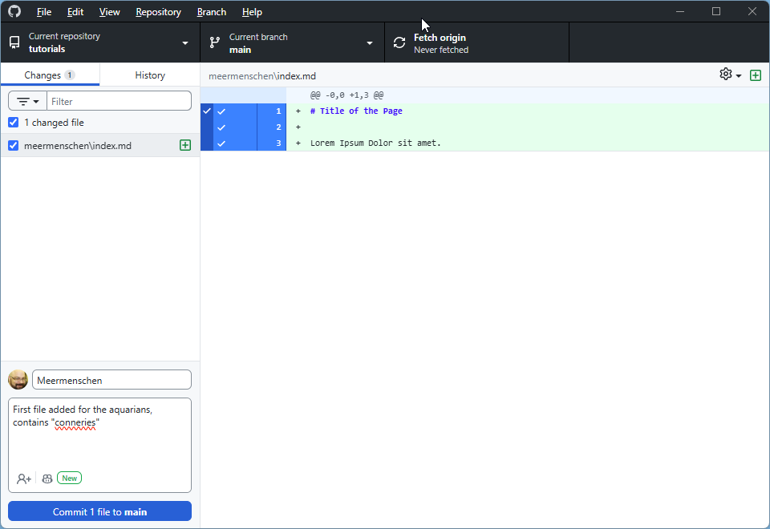
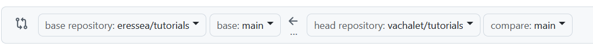

Schnellanleitung zum Veröffentlichen Ihres „Tutorials"
📋 Überblick
Diese Anleitung führt Sie durch die Veröffentlichung Ihrer Spielberichte auf GitHub Pages in 4 Hauptschritten:
- Vorbereiten Ihrer Markdown-Dateien
- Erstellen Ihres GitHub-Forks
- Hinzufügen Ihrer Dateien
- Beitragen zum Hauptprojekt
SCHRITT 1: Markdown-Dateien vorbereiten
1.1 Ihre .md-Dateien erstellen
- Bereiten Sie Ihre Dateien im
.md (Markdown) Format vor
- Konsultieren Sie Online-Tutorials oder verwenden Sie Konverter
- Benennung: Verwenden Sie Namen ohne Leerzeichen (verwenden Sie
- oder _)
- Bilder: Vermeiden Sie Dateiendungen in Großbuchstaben
1.2 Den obligatorischen Header hinzufügen
⚠️ WICHTIG: Fügen Sie diesen Block am Anfang jeder Datei ein:
---
title: "Your_Race: Runde 1"
date: 2023-10-15
---
- Das Datum bestimmt die Anzeigereihenfolge auf Ihrer Seite
- Ich habe das Datum der Runden-Generierung eingesetzt. (also cr oder nr)
- Für Intro/Fazit: Passen Sie das Datum für die richtige Positionierung an
1.3 Formatierungsregeln
- Zeilenumbruch: mit
Leerzeichen+Leerzeichen+Return enden
- Titel: verwenden Sie
#, ##, ###
- Bilder: Format

Nützliche Ressourcen:
SCHRITT 2: Ihren GitHub-Fork erstellen
2.1 Ein GitHub-Konto erstellen
Falls noch nicht geschehen: https://github.com
2.2 Das Repository forken
- Gehen Sie zu: https://github.com/eressea/tutorials
- Klicken Sie auf: „Fork"-Button (oben rechts)
- Wählen Sie: Ihr persönliches Konto
- Warten Sie auf: die Fork-Erstellung
2.3 Ihren Fork konfigurieren
Allgemeine Konfiguration

GitHub Pages aktivieren

💡 Hinweis: Für spätere Synchronisation → „Sync fork"-Button
⚠️ Berühren Sie nicht den gh-pages-Branch Er dient zur Veröffentlichung Ihrer Seiten.
SCHRITT 3: Ihre Dateien hinzufügen
3.1 GitHub Desktop installieren
Download: https://desktop.github.com/download/
3.2 Erster Start
- Authentifizierung: über Ihren Browser
- Klonen: Wählen Sie Ihr Repository
- Klicken Sie: „Clone your_account/tutorials"
- Standardordner:
C:\Users\<IhrBenutzername>\Documents\GitHub\tutorials
3.3 Ihre Dateien organisieren
- Erstellen Sie: einen
your_race-Ordner neben dem goblins-Ordner
- Fügen Sie hinzu: Ihre
.md-Dateien in diesen Ordner
3.4 Git-Workflow
Änderungen ansehen

Commit (speichern)
- Wählen Sie: Dateien zum Committen aus
- Schreiben Sie: kurze Beschreibung der Änderungen
- Klicken Sie: „Commit * files to main"
Push (senden)

Klicken Sie: „Push origin" um zu GitHub zu senden
SCHRITT 4: Zum Projekt beitragen
4.1 Ihre Arbeit überprüfen
✅ Ihre Seiten testen
- Gehen Sie zu: Ihrer Website (Link in Settings → GitHub Pages)
- Überprüfen Sie: die Seitenanzeige
- Bei Problemen: auf Ihrem PC: ändern → commit → push
- ⏱️ Geduld: Update kann Zeit brauchen
✅ Ihren Fork synchronisieren
- Überprüfen Sie: ob Ihr Fork aktuell ist
- Falls nötig: verwenden Sie „Sync fork"
4.2 Eine Pull Request erstellen
Wenn alles bereit ist:

- Gehen Sie zu: „Pull Request"
- Klicken Sie: „New Pull Request"
- Überprüfen Sie: alles was vorgeschlagen wird
- Kommentieren Sie: erklären Sie Ihre Änderungen
- Bestätigen Sie: senden Sie die Anfrage
🎉 Ergebnis
Ihr Beitrag liegt nun in Ennos Händen zur Validierung!
🚀 Zusammenfassung der Schritte
| Schritt |
Aktion |
Tool |
| 1 |
.md-Dateien vorbereiten |
Texteditor |
| 2 |
Fork + Konfiguration |
GitHub Web |
| 3 |
Dateien hinzufügen |
GitHub Desktop |
| 4 |
Pull Request |
GitHub Web |
📞 Hilfe benötigt?
- Auf Discord: https://discord.com/channels/509396702663278592/1404841577402077332
- GitHub-Dokumentation für Git-Details